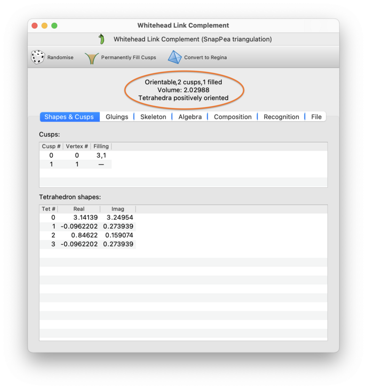
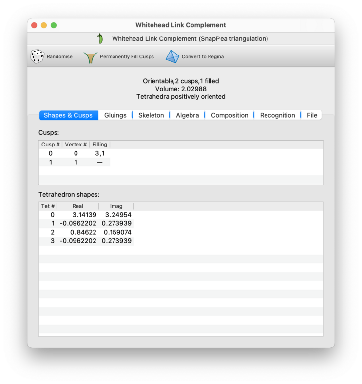
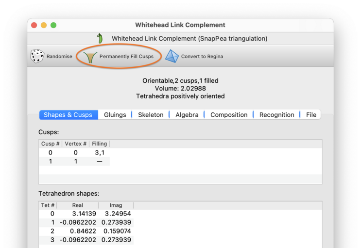
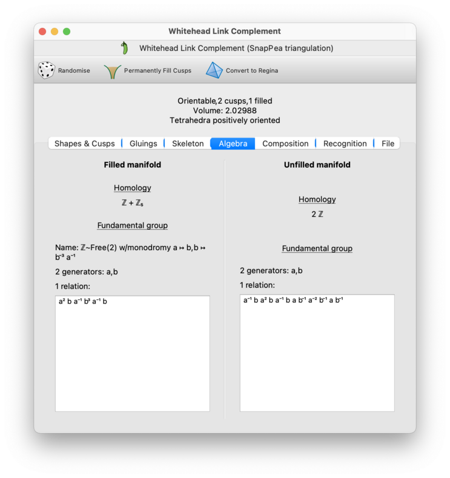
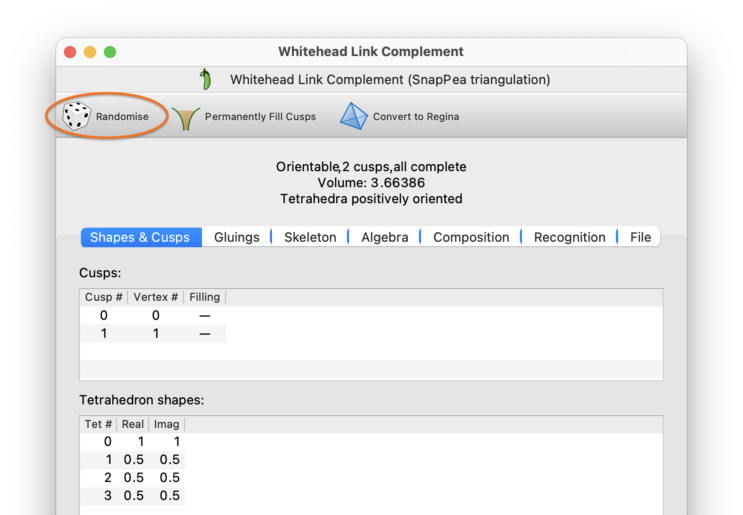
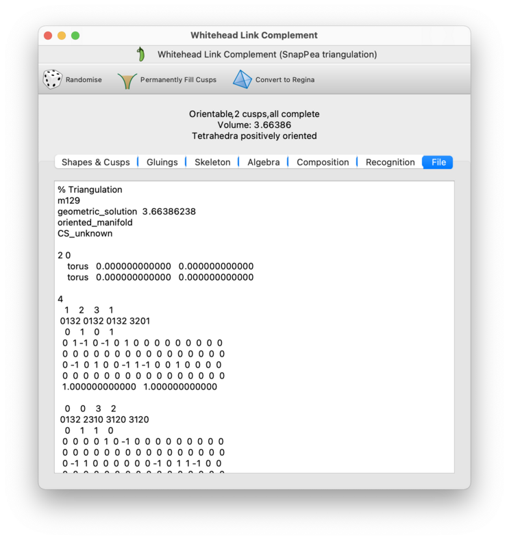
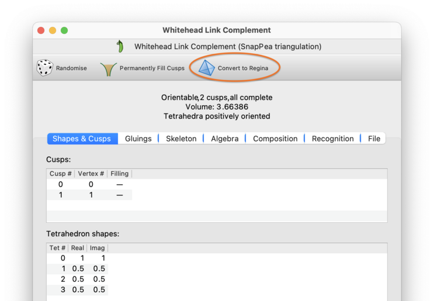

Analysis and Modification | |
| Prev | SnapPea Triangulations | Next |
SnapPea triangulations inherit a great deal of functionality from Regina's native 3-manifold triangulations. If you open the SnapPea triangulation viewer, you will see several familiar tabs: gluings, skeleton, composition, and recognition. These behave much like their counterparts for native triangulations; you can read more details by following any of the links above. Note that these “inherited” tabs describe the unfilled triangulation only (i.e., any fillings on the cusps are ignored).
In the remainder of this chapter we discuss the extra functionality that is specific to SnapPea triangulations.

At the top of the SnapPea triangulation viewer is a banner listing some basic properties of the manifold (circled in red above). These include:
- Orientable / Non-orientable
Indicates whether or not the manifold is orientable. Note that an orientable SnapPea triangulation will automatically be oriented (i.e., the vertex labels 0, 1, 2 and 3 on each tetrahedron will induce a consistent orientation for all tetrahedra).
- Cusps
Regina will tell you how many cusps the manifold has, as well as how many of these cusps are filled and how many are complete (unfilled).
You can view, change, add or remove fillings on cusps through the Shapes & Cusps tab.
- Volume and solution type
Gives SnapPea's estimate of the hyperbolic volume, as well as the type of solution that SnapPea found to the hyperbolic gluing equations.
If you have filling coefficients on some or all of the cusps, then the volume and solution type will be with respect to the filled manifold.
The solution type will be one of the following:
- Tetrahedra positively oriented
All tetrahedra are positively oriented.
- Contains flat or negative tetrahedra
The overall volume is positive, but some tetrahedra are flat or negatively oriented. No tetrahedra have shape 0, 1 or infinity.
- All tetrahedra flat
All tetrahedra are flat, but none have shape 0, 1 or infinity.
- Contains degenerate tetrahedra
At least one tetrahedron has shape 0, 1 or infinity.
- Unrecognised solution type
The volume is zero or negative, but the solution is neither flat nor degenerate.
- No solution found
The gluing equations could not be solved.
- Externally computed
Tetrahedron shapes were inserted into the triangulation by some other means (e.g., manually, or by another program).
The Shapes & Cusps tab shows information on each of the cusps, and also shows the individual tetrahedron shapes for SnapPea's solution to the hyperbolic gluing equations.

The individual cusps are numbered by the SnapPea kernel (0, 1, 2, …). Beside each cusp is the corresponding vertex number given by Regina; this is the vertex number that you see in the skeleton viewer. Note that Regina's vertex numbers and SnapPea's cusp numbers are often, but not always, the same.
Also beside each cusp you will see the current filling coefficients, if any. You can change the filling coefficients by typing new values directly into the table. To remove the filling from a cusp (i.e., to make it complete), simply delete the contents of the table cell.
If you wish to see the explicit trianglation of some cusp (i.e., the triangulated vertex link), you can select → from the menu. This will explicitly build the chosen vertex link as a new 2-manifold triangulation. This operation is the same as for Regina's native triangulations, and you can read more details in the triangulations chapter.
You can also make your fillings permanent, by selecting → from the menu, or by pressing the corresponding toolbar button (as circled in the picture below). If some of your cusps are complete (i.e., unfilled) then this will create a new SnapPea triangulation with only those unfilled cusps remaining. If all of your cusps have fillings then this will create a new native Regina triangulation describing a closed 3-manifold. Either way, the result will be added to the packet tree beneath your original SnapPea triangulation, and the original will be left untouched.

At the bottom of the Shapes & Cusps tab you will see the full details of SnapPea's solution to the hyperbolic gluing equations. This solution is with respect to the Dehn filled hyperbolic structure (i.e., your filling coefficients will be taken into account).
In particular, you will see a table listing the individual tetrahedron
shapes. These are given as the complex numbers
z0,
z1,
… in rectangular form,
and using a fixed coordinate system (“fixed alignment”
in SnapPea's terminology).
The Algebra tab shows the first homology and the fundamental group, for both the filled manifold (respecting your filling coefficients), and also the unfilled manifold (ignoring your filling coefficients and instead treating every cusp as complete).
As with Regina's native triangulations, complete (i.e., unfilled) cusps will be treated as though they had been truncated. In other words, each unfilled ideal vertex will be treated as a torus or Klein bottle boundary component for the underlying 3-manifold.
Each fundamental group will be presented as a set of generators and relations, just as you would see in the algebra viewer for Regina's native triangulations.

Tip
If you cannot read the superscript digits in the fundamental group presentations, or if you cannot read the blackboard-bold Z symbols in the homology groups, try disabling unicode symbols in Regina's settings.
SnapPea has a feature where it “randomises” a triangulation by applying a series of random Pachner moves (e.g., 2-3 and 3-2 moves). You can do this by selecting → from the menu, or pressing the corresponding toolbar button (circled in the picture below).

SnapPea can attempt to compute the canonical retriangulation of a manifold. In theory, two hyperbolic manifolds are homeomorphic if and only if their canonical triangulations are isomorphic (i.e., identical up to a relabelling of the tetrahedra and/or their vertices).
Note that you can test for isomorphism in the composition tab, which is available for SnapPea triangulations as well as Regina's own native triangulations. You can also test for isomorphism by comparing the isomorphism signatures of triangulations.
The canonical retriangulation is based on the canonical Epstein-Penner cell decomposition; see [Wee93] for a description of the main ideas. If the Epstein-Penner decomposition is already a triangulation then the canonical retriangulation is the same; otherwise it retriangulates the Epstein-Penner decomposition in a canonical way by introducing new internal vertices. Because of this latter possibility, the result will be one of Regina's more flexible triangulation packets, and not a SnapPea triangulation.
Warning
This is one of SnapPea's more fragile operations: it will often compute the canonical retriangulation incorrectly due to floating point errors. Regardless, it is guaranteed that whatever triangulation SnapPea does produce will be homeomorphic to the original.
To compute the canonical retriangulation, select → from the menu. This will create a new Regina triangulation immediately beneath the original SnapPea triangulation in the packet tree; the original will be left untouched.
The File tab shows the triangulation in SnapPea / SnapPy's own file format. You can copy this to the clipboard and paste it into other applications if you wish.
If you simply wish to save the triangulation as a SnapPea / SnapPy data file on your hard drive, you might find it easier to export the SnapPea triangulation directly instead.

If you want access to Regina's full functionality and fine-grained access to the triangulation, you can convert your SnapPea triangulation packet into one of Regina's native 3-manifold triangulation packets. To do this, select → from the menu, or press the corresponding toolbar button (as circled in the picture below). This will create a new Regina triangulation immediately beneath the original SnapPea triangulation in the packet tree; the original will be left untouched.
Warning
Be aware that, when you convert to a Regina triangulation, all SnapPea-specific information such as fillings and peripheral curves will be lost. If you want the new Regina triangulation to include your fillings, then you should first make your fillings permanent.

| Prev | Contents | Next |
| SnapPea Triangulations | Up | Normal Surfaces and Hypersurfaces |